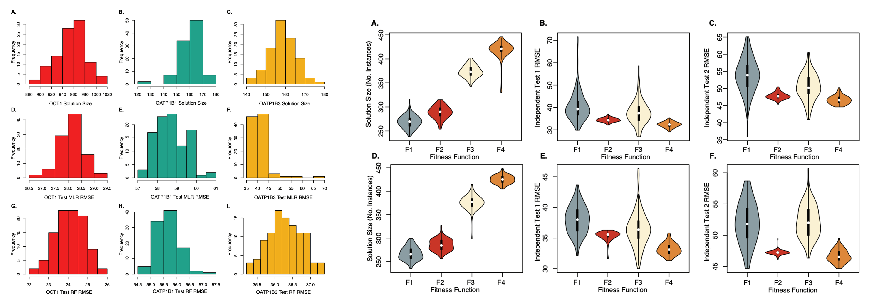

|
Konghao (Shelton) Zhao
I was born in Zhejiang, China and raised in Beijing. I am a senior undergraduate at Wake Forest University, majoring in Computer Science and Mathematics.
I conduct research as an undergraduate researcher at the Wake Forest DataMine Research Group advised by Natalia Khuri.
Last summer, I interned as a summer scholar at Carnegie Mellon Robotics Institue Advanced Agent-Robotics Technology Lab advised by Katia Sycara.
My current research interest is leveraging multi-objective optimization strategies to design and implement high-performance and reliable ML/AI solutions to human health applications.
I am pursuing a PhD degree in Computer Science, and I hope to contribute to the development of more efficient, interpretable, and self-explainable
ML/AI solutions with high performance for high-stake applications.
[ Email /
CV /
LinkedIn /
Google Scholar /
Github ]
|
|
Recent News
Publications(Some works are highlighted)
|
|
Benchmarking and Enhancing Disentanglement in Concept-Residual Models
Renos Zabounidis, Ini Oguntola, Konghao Zhao, Joseph Campbell, Simon Stepputtis, Katia Sycara
CVPR 2024
Under Review
[
arXiv
]
▶ Show Abstract
Concept bottleneck models (CBMs) are interpretable models that first predict a set of semantically meaningful features, i.e., concepts, from observations that are subsequently used to condition a downstream task.
However, the model's performance strongly depends on the engineered features and can severely suffer from incomplete sets of concepts.
Prior works have proposed a side channel -- a residual -- that allows for unconstrained information flow to the downstream task, thus improving model performance but simultaneously introducing information leakage, which is undesirable for interpretability.
This work proposes three novel approaches to mitigate information leakage by disentangling concepts and residuals, investigating the critical balance between model performance and interpretability.
Through extensive empirical analysis on the CUB, OAI, and CIFAR 100 datasets, we assess the performance of each disentanglement method and provide insights into when they work best.
Further, we show how each method impacts the ability to intervene over the concepts and their subsequent impact on task performance.
|
|
|
scrnabench: A Package for Metamorphic Benchmarking of scRNA-seq Data Analysis Methods
Nathan P. Whitener, Konghao Zhao, Jason M. Grayson, Natalia Khuri
Bioinformatics
Under Review
[
Code
]
▶ Show Abstract
|
|
|
An Ensemble Machine Learning Approach for Benchmarking and Selection of scRNA-seq Integration Methods
Konghao Zhao, Sapan Bhandari, Nathan P. Whitener, Jason M. Grayson, Natalia Khuri
October 2023, ACM-BCB
Oral Presentation (Top 10% of all accepted papers)
[
Paper ,
Code
]
▶ Show Abstract
Accurate integration of high-dimensional single-cell sequencing datasets is important for the construction of cell atlases and for the discovery of biomarkers.
Because the performance of integration methods varies in different scenarios and on different datasets, it is important to provide end users with an automated system for the benchmarking and selection of the best integration among several alternatives.
Here, we present a system that uses an ensemble of auditors, trained by supervised machine learning, which quantifies residual variability of integrated data and automatically selects the integration with the smallest difference between observed and expected batch effects.
A rigorous and systematic validation was performed using 6 popular integration methods and 52 benchmark datasets.
Algorithmic and data biases were uncovered and shortcomings of existing validation metrics were examined.
Our results demonstrate the utility, validity, flexibility and consistency of the proposed approach.
|
|
|
Multi-Objective Genetic Algorithm for Cluster Analysis of Single-Cell Transcriptomes
Konghao Zhao, Jason M. Grayson, Natalia Khuri
January 2023, Journal of Personalized Medicine
Monthly cover
[
Paper ,
Code
]
▶ Show Abstract
Cells are the basic building blocks of human organisms, and the identification of their types and states in transcriptomic data is an important and challenging task.
Many of the existing approaches to cell-type prediction are based on clustering methods that optimize only one criterion.
In this paper, a multi-objective Genetic Algorithm for cluster analysis is proposed, implemented, and systematically validated on 48 experimental and 60 synthetic datasets.
The results demonstrate that the performance and the accuracy of the proposed algorithm are reproducible, stable, and better than those of single-objective clustering methods.
Computational run times of multi-objective clustering of large datasets were studied and used in supervised machine learning to accurately predict the execution times of clustering of new single-cell transcriptomes.
|
|

|
An Evolutionary Approach to Data Valuation
Natalia Khuri, Sapan Bhandari, Esteban Murillo Burford, Nathan P. Whitener and Konghao Zhao
August 2022, ACM-BCB
Long Paper
[
Paper
]
▶ Show Abstract
Data valuation in machine learning comprises computational methods for the estimation of the importance of individual training instances.
It has been used to remove noise, uncover biases, and improve the accuracy of trained models.
Current data valuation techniques do not scale up for large datasets and do not work for regression tasks, where the objective is to predict a numerical outcome rather than a small number of nominal class labels.
In this work, an evolutionary approach for qualitative and quantitative data valuation, is presented.
The proposed approach is tested on regression and classification benchmarks, and on several bioinformatics and health informatics datasets.
In addition, models trained with most valuable subsets of data are validated on independently acquired tests, demonstrating the generalizability as well as the practical utility of the proposed approach.
|
|
|
Multi-target Integration and Annotation of Single-cell RNA-sequencing Data
Sapan Bhandari, Nathan P. Whitener, Konghao Zhao and Natalia Khuri
August 2022, ACM-BCB
Short Paper
[
Paper
]
▶ Show Abstract
Cells are the building blocks of human tissues and organs, and the distributions of different cell-types change due to environmental or disease conditions and treatments.
Single-cell RNA sequencing is used to study heterogeneity of cells in biological samples.
To date, computational approaches aided in the discovery of dominant and rare cell-types and facilitated the construction of cell atlases.
Integration of new data with the existing reference atlases is an emerging computational problem, and this paper proposes to frame it as a multi-target prediction task, solvable using supervised machine learning.
We systematically and rigorously test 63 different predictors on synthetic benchmarks with different properties.
The best performing predictor has high Cohen's Kappa scores and low mean absolute errors in single-batch and multi-batch integration experiments.
|
Miscellanea
Awards
-
| CRA Outstanding Undergraduate Researcher Award Honorable Mention (Computing Research Association) |
December 20, 2023 |
-
| RISS 2023 Summer Scholarship (Carnegie Mellon University Robotics Institute) |
June 1, 2023 |
-
| Wake Forest Research Fellowship (Wake Forest URECA Center) |
May 1, 2022 |
|
|
{kind=link}